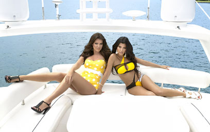

|
||
|
ראיון |
||
|
קרדשיאן. סידרו לה תוכנית
צילום: mct
|
||
|
||


הצלחתה של משפחת קרדשיאן בתחום הריאליטי הולידה את "קורטני וקלואי עושות את מיאמי" שבמרכזה אחיותיה של קים. אז מה יהיה שם? ביקיני, גברים ובירבורים. חשבתם אחרת?
נמרוד דביר
יש משפחות בהן שולפים באירועים גדולים את הקובה או את הגפילטע-פיש. במשפחת קרדשיאן, מיוחדת ושונה מאחרות, אוהבים לשלוף את הישבנים והמצלמות. המשפחה, המתפרנסת יפה מעסקי הריאליטי, עשתה קריירה שלמה מהתבזות טלוויזיונית.

קלואי וקורטני על היאכטה. קשקושי בילויים או קידום מאסיבי של הביזנס?
אחרי שאם המשפחה, קריס, התחתנה עם הספורטאי האולימפי ברוס ג'אנר, היא פצחה בקריירה סוערת של אשת חברה. את הנדחפוּת החברתית היא הורישה לבנותיה בהצלחה רבה. קים פרצה ראשונה על תקן דוגמנית, שחקנית, החברה הכי טובה של פריס הילטון לשנייה וחצי וקלטת סקס אחת שהפכה אותה לטוסיק הכי מפורסם באמריקה. היא גם תועדה בתוכנית הטלוויזיה "קים את מפורסמת", שהציגה את המשפחה המשוגעת והפכה ללהיט גדול בערוץ !E.
אחרי שאחיותיה קלואי וקורטני הופיעו בסדרה של האחות, הן החליטו שבא להן גם. ועכשיו קבלו את "קורטני וקלואי עושות את מיאמי", ריאליטי חדשה בה השתיים נוסעות לעיר המסיבות במטרה לכבוש כל פינה אפשרית.
האמת היא שהכיוון פה עסקי לחלוטין. קורטני וקלואי הן הבעלות של בוטיק בשם "דש" (D-A-S-H), שם הן מוכרות בגדי מעצבים. לרגל פתיחת סניף של החנות במיאמי הן הזניקו את הסדרה הנ"ל, מה שאומר שכל קשקושי הבילויים שלהן על היאכטות למעשה מתובלים בקידום מאסיבי של הביזנס.
מיאמי, מאמי
לקראת עליית התוכנית בארץ מחר (ה' ב-22:10 בערוץ !E), תפסנו את קלואי לשיחת טלפון שהתקיימה כשעתיים לאחר המועד שנקבע. בדרכה ההילטונית, מיהרה קלואי להפשיר את האווירה. "נמרוד, אני אוהבת אותך!", הכריזה בפתיחת השיחה.
את לא באמת.
"באמת, אני א-ו-ה-ב-ת אותך. לא התכוונתי לאחר. הצוות שלי נותן לי יותר מדי עבודה, אז לפעמים יש בלבול בלוחות זמנים. אבל עכשיו אני לגמרי איתך".
אם את לגמרי איתי אז למה יש רעש של פן ברקע?
"אה, זה. אני פשוט מצטלמת עכשיו למגזין 'ראדר' אז אני יושבת באיפור-שיער. אבל אפשר לדבר, אין בעיה".
קורטני וקלואי. "אמא יודעת מה היא עושה"
אז בזמן שקלואי מייבשת את שיערה, קצת מידע על הגברת. היא בת 25, בת של קריס ועו"ד רוברט קרדישיאן שהלך לעולמו. לעסקי האופנה הגיעה בעקבות אחותה. "קורטני ואני היינו סטייליסטיות במשך שנים", היא מספרת, "ואז היא פתחה חנות בגדי ילדים ובעקבותיה החלטנו לפתוח חנות בגדי נשים. השאר היסטוריה".
"אנחנו מוכרות בגדים שאנחנו אוהבות", היא מספרת על העסק המשפחתי, "וגם טי שירטס, נרות, בקבוקי מים. קורטני, קים ואני עושות את כל הקניות לחנות, ואחת מאיתנו לפחות נמצאת בחנות בכל יום. אנחנו מאוד מעורבות".
אז באמת עברתן למיאמי?
"כן, באמת. תראה, קורטני ואני נפרדנו מהחברים שלנו באותו זמן ורצינו לפתוח חנות חדשה כדי להשקיע אנרגיה בעסקים ולשכוח מבחורים, ויש לי גם תוכנית רדיו שקיבלתי שם. החוויה הזו היתה הפסגה של התוכנית. זו עוד פלטפורמה בשבילי להשתגע, להתפרע, לומר מה שיש לי בראש".
איך הגעת בכלל לעסקי הריאליטי?
"אמא שלי היא חברה טובה של ריאן סיקרסט (מנחה 'אמריקן איידול') והוא המפיק של התוכנית שלנו. יום אחד אמא שלי הביאה את הרעיון לריאן, והוא אהב אותו. בקיצור, התוכנית היא הבייבי של אמא שלי ושל ריאן. הם עבדו על הכל. אנחנו פשוט הגענו", היא צוחקת.
לא מוזר שאמא שלך מנהלת לך את הקריירה?
"אני סומכת על אמא שלי במאה אחוז. לא חשבנו אף פעם לעשות תוכנית ריאליטי, אבל זה פשוט כיף בשבילנו. והנה, התוכנית שלנו הפכה להיות התוכנית הכי נצפית בערוץ !E והחנות במיאמי מצליחה בצורה מדהימה. כנראה שאמא שלי יודעת מה היא עושה".
צהוב עולה
ולאמא כנראה לא אכפת לראות בתוכנית את קלואי משתטה לגמרי, כולל בילויים מוטרפים, אמרות טיפשיות וכל מיני נפיחות בלונד שמושכות את הרייטינג. גם לקלואי אין בעיה להיות סתומה להשכרה.
האחות קים. לא מדברים על קלטת הסקס (צילום: AP)
"הכל מאה אחוז אמיתי", היא מודה. "מה שרואים זו האישיות שלי. אוקיי, זה קצת ערוך, אבל אני עומדת מאחורי הדמות שמציגים שם. אף אחד לא מבקש ממני לעשות משהו בכל שלב בתוכנית. מה שרואים זו מי שאני. אני לא לוקחת את עצמי ברצינות.
אם אני מגולמת בדרך מסוימת, למי אכפת? אני חושבת שאני עוברת מסך כבחורה משוחררת שעושה מה שהיא רוצה ואומרת מה שבראש שלה. האמת, יש עוד צד שלי שלא עובר בתוכנית. יש לי גם צד ביצ'י. אני סרקסטית, אבל הקהל לא רואה את הכל".
אחד הדברים שהקהל לא ראה הוא מעצרה של קלואי ב-2007, אז נתפסה נוהגת בשכרות. העסק זכה לסיקור תקשורתי וגם הופיע בתוכנית של האחות, קים, אבל ספק אם מדובר בהישג שקלואי היתה שמחה לתלות מעל המיטה. "אני מרגישה שלכל דבר יש סיבה", היא מספרת על המעצר. "עשיתי טעות חמורה אבל התבגרתי ולקחתי את עניין הגמילה מאוד ברצינות. המסר שלי הוא 'זה יכול לקרות לכולם'. אל תשתו ותנהגו".
מה עם "אל תעשו סקס ותצטלמו"? כי זה מה שאחותך קים עשתה, בקלטת שזכתה לתהודה עולמית.
"אממ... אני לא רוצה לדבר על זה. אני גאה באחותי, לא משנה מה היא תעשה. למדתי לא לקחת את העסק הזה ברצינות. הצהובונים לא מכירים אותי, לא מכירים את המשפחה. כל מה שהם זה אנשים ביקורתיים שצריכים למכור מגזינים, וזה בסדר. זה הכל חלק מהמשחק. לא אכפת לי אם הם נחמדים או רשעים אלי. יש לי את המשפחה והחברים ואני לא צריכה להוכיח כלום לאף אחד".
חזרה